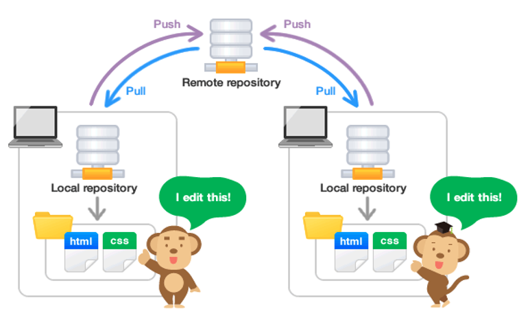

7 Additional Resources
7.1 Git for Teams
Be on the lookout for the second workshop in DataLab’s Git workshop series, which covers the process of using Git to work with teams performing collaborative development.

7.2 The Git Book
The Git Book is the definitive Git resource and provides an excellent reference for everything that we will cover in the interactive session. There is no need to read the book prior to the session, but it’s a good reference resource to have avaialable as you begin to work with Git after the workshop.